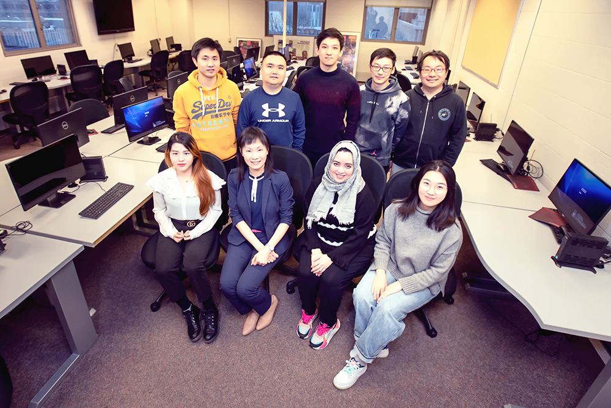

Description
The novel coronavirus, COVID-19, is transmitted through person-person contact so social distancing is an approach to help manage the spread of the virus. In practicing social distancing, there is still a need for groceries, medical supplies, etc., requiring travel and visits to local establishments. In doing so, we all have the opportunity to make choices on where we go and what establishments we visit to meet our daily needs. To assist with making an informed decision, the web application (add URL) provides users with access to publicly available U.S. and Cuyahoga County (need exact details on coverage) data, with updates (need specific time period e.g. hourly, daily, …) including Confirmed Cases, New Cases, Recovered and Deaths and details on a discussion threads from Reddit. Further, the available data is analyzed and combined to provide actionable information to users, by local area, to assess the potential risk of traveling to a specific area. Users interact with the web applications by hovering over an area of interest on the map, at which time a text box appears for the area (need to know the size of the area) that provides the following information to users: Population Density per square mile, Traffic Status ( a measure of traffic density in the area (need specifics)) on a scale of 1-5 Stars (1 Star-low traffic, 5 Stars-high traffic), Public Perception on a scale of 0-1 (0-not aware, 1-very aware) and then a Risk Index on a scale of 0-1 (0-minimal risk, 1-high risk) that combines all the available data and provides an index that is related to the possibility of high contact with individuals in that area and includes data from Public Perception in the given as related to COVID-19.
Disclaimer
The information contained on the website (the "Service") is for general information purposes only. Case Western Reserve University (CWRU) assumes no responsibility for errors or omissions in the contents on the Service. In no event shall CWRU be liable for any special, direct, indirect, consequential, or incidental damages or any damages whatsoever, whether in an action of contract, negligence or other tort, arising out of or in connection with the use of the Service or the contents of the Service. CWRU reserves the right to make additions, deletions, or modification to the contents on the Service at any time without prior notice. Users should not rely on the information provided in this Service as a substitute for, nor does it replace, advice, guidelines and/or requirements that provided by city, state and federal agencies.
About Yes Lab
Yes Lab at Case Western Reserve University is a team of faculty, postdocs and students who work together on developing state-of-the-art innovations that advance capabilities of AI to enhance cybersecurity. Our work covers areas such as Cybersecurity, Data Mining, Machine Learning and Health Intelligence.

Our Leadership
T. and D. Schroeder Associate Professor
Department of Computer and Data Sciences
Case Western Reserve University
Email: yanfang.ye (at) case (dot) edu
Nord Professor of Engineering
Department of Electrical Engineering and Computer Science
Case Western Reserve University
Email: kal4 (at) case (dot) edu
Our Team

Shifu Hou
(Ph.D. Student)

Yiming Zhang
(Ph.D. Student)

Yujie Fan
(Ph.D. Student)

Yiyue Qian
(Ph.D. Student)

Shiyu Sun
(MS Student)

Qian Peng
(MS Student)
© Copyrights Yes Lab. All Rights Reserved.